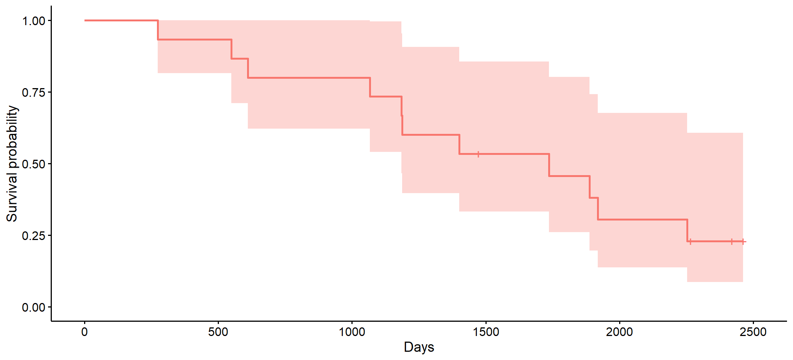
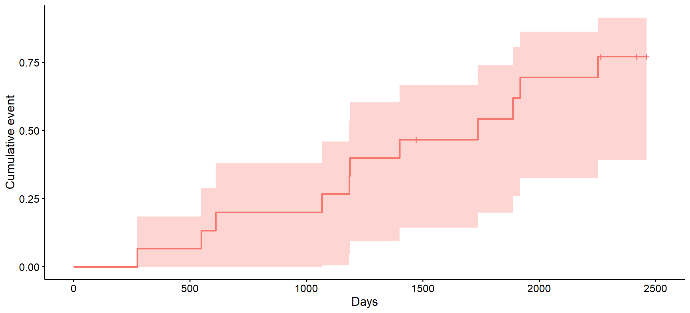
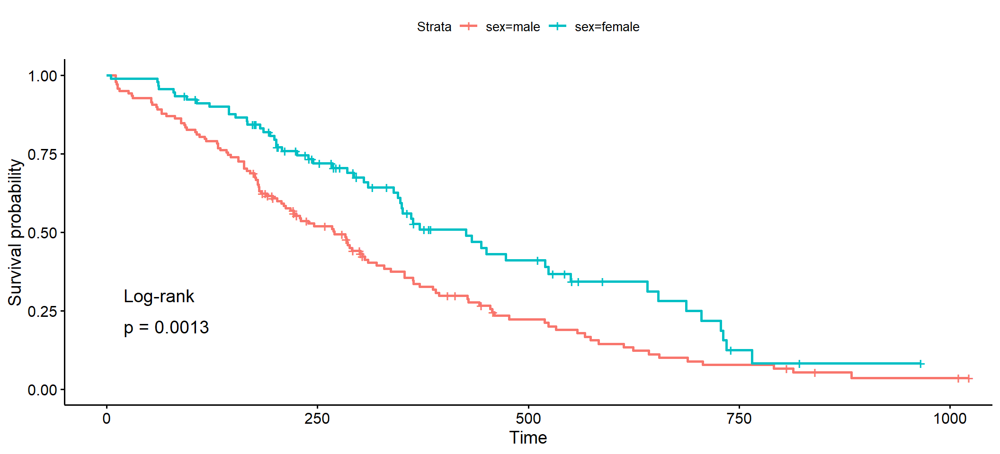

3 Survival analysis and Cox regression models
In this unit, we introduce several analysis methods that are collectively referred to as survival analysis. As the name suggests, these methods are used to analyse survival times, but not only. In fact, they can be used to analyse the time to an event of interest, regardless of what this event is (death or other).
Common goals of survival analysis are:
To estimate the survival function, which describes the probability of survival as a function of time.
To compare survival functions among several populations of individuals (e.g., males vs females, treated vs non-treated, etc.)
To model survival as a function of potential explanatory variables (like age, gender, prognostic markers, treatment received).
In the following sections we present methods to accomplish all these objectives, but first we must introduce some theoretical concepts on which these methods are based. Let’s start by clarifying what is the type of variables we can analyse with these methods.
3.1 Time to event variables (T)
By survival time we mean the time from an initial point (such as the diagnosis of a malignancy) to death. Therefore, survival times are time intevals defined by a starting point and the event “death”. While survival times are measured in many studies on life threatening diseases such as cancer, other time intervals may be of interest in both cancer and many other research areas. Here are some examples:
the time from surgery to disease progression in cancer patients.
the time from transplant to graft rejection in transplant patients.
the time from atrioventricular node ablation to arrhythmia recurrence in patients with atrial fibrillation.
the time to pain relief after taking an analgesic drug.
All of these examples assess the time to an event (whether disease progression, graft rejection, arrhythmia recurrence, or pain relief). We refer to these as time-to-event variables, and usually denote them by T. Note, however, that an unambiguous definition of a time interval requires not only specifying the event of interest, but also the starting point from which we begin counting time.
While time to event variables are continuous in nature, their analysis presents some challenges that do not affect other types of continuous variables (like the weigh of a newborn, or the blood concentration of cholesterol). Tipically, time to event variables tend to show a markedly asymmetric distribution, and some cases may show very long times. Because of this, it is impractical, if not impossible, to observe the complete time interval for some cases, since we would have to wait a long time for the event to appear in all of them. This generates a problem known as censoring, which we discuss in the next section.
3.2 Censoring
Consider a hypothetical survival study that recruits patients starting from 01 January 2015. Recruitment is completed two years later (01 January 2017) and then, patients are followed for five additional years untill study finalisation on 01 january 2023. Figure 3.1 illustrates the enrollment and follow-up (horizontal lines) of patients up to death (dots) or study termination. Dashed lines indicate study start, end of recruitment and end of study.
Figure 3.1: Chronolgy of enrollment and follow-up of patients
Most of the 15 patients died at some point, so that we know what is the survival time for them . However, there are four patients that did not die during the follow-up: patients 9, 11 and 13 were alive by the end of study, and patient 8 was lost to follow up after about 4 years (1460 days). These are called censored observations beacuse we only observed part of their survial time, but not all of it. While we cannot know what is the actual survial time for these patients, we know it is greater than the time we followed them. For instance, we know that the survival time for patient 8 is greater than 4 years.
Censored observations are commonplace in time to event studies. While it may not be obvious how to deal with them in the analysis, it is important to understand that we cannot simply ignore censoring. On the one hand, taking the observed follow-up time as the survival time would underestimate it. On the other hand, removing censored observations from the analysis on the grounds that we ignore the actual survival time would produce an even greater underestimation, since these cases are the ones with the longest survival.
Censoring can happen in different forms when measuring time to an event, and it is usual to distinguish:
Right censoring: this is the case when we know the starting point, but the follow-up is interrupted (for whatever the reason) before the event is observed. This is the case affecting the hypotthetical study of figure 3.1 and most survival studies, or more generally, most time to event studies.
Left censoring: this is the case when we do not know the starting point, but a follow-up has been initiated after it, and has continued until the event is observed. This would be the case if we wanted to estimate the time of evolution of a disease until some complication (or death); since many chronic diseases are not diagnosed when they appear but some time thereafter, starting follow-up at the diagnostic date implies left-censoring of the true time of evolution of the disease.
Interval censoring: this is the case when we know the starting point, but patients are monitored at discrete times rather than continuously (for instance, once a year), so that when the event is observed, we cannot know the exact date it appeared. For instance, if a patient does not show the event in the first three yearly controls but shows it at the fourth year control, we only know that the time to the event is some value between 3 and 4 years, but we ignore the precise value.
The methods presented in this unit are appropriate to deal with right censoring only, but fortunately this is the most common type of censoring in clinical studies. Moreover, these methods assume that the censoring is non-informative, which means it is not related to the probability of occurrence of the event. Conversely, informative censoring refers to the case where the censoring is related to the probability of ocurrence of the event, and this may cause biased survival estimates.
3.3 Survival objects in R
Figure 3.2 shows the follow-up and events for the same patients of figure 3.1, but now sorted by follow-up length, as well as the dataframe containing the relevant data. Note that two variables are needed: one for the duration of follow-up (days), and another one for the patient’s status at the end of follow-up (event), so that events can be distinguished from censored observations. In this case, the event has been coded as 1, while 0 indicates a censored observation.
Figure 3.2: Length of follow-up and data
The survival package has a function Surv() (note the capital S in Surv !) allowing to combine the duration of follow-up (passed as first argument) and the event indicator (second argument) into a single survival object. Assuming the dataframe shown in 3.2 has name d, the following will produce a survival object:
library(survival)
Surv(d$days, d$event) [1] 274 549 611 1066 1185 1188 1400 1472+ 1736 1887 1918 2253
[13] 2265+ 2419+ 2462+The result looks much like a numeric vector of follow-up lengths, but it is not: censored observations have been suffixed with a plus sign (which is not possible in standard numeric vectors). As we will see below, survival objects are what we need to analyze survival times.
Note that the Surv() function expects the event indicator to be coded in any of the following ways:
TRUE/FALSE, whereTRUEis event andFALSEis censored, or1/0, where1is event and0is censored; or2/1where2is event and1is censored.
When creating a survival object it is very important to ensure that the event indicator is coded in one of these ways. In dataframe d, the event indicator d$event is coded as the second case above (1/0, where 1 is event and 0 is censored), and therefore the survival object created in the previous script is correct. Equivalently, we could have defined the survival object as:
Surv(d$days, d$event == 1) [1] 274 549 611 1066 1185 1188 1400 1472+ 1736 1887 1918 2253
[13] 2265+ 2419+ 2462+Note that in this case we are using the first coding above, since the comparison d$event == 1 will produce a logical vector, with TRUE for cases with event (1), and FALSE for non-events (0). This syntax has the advantages of making explicit the value of the event variable that corresponds to event cases.
3.5 Estimating the survival function
We previously discussed the importance of taking censoring into account to estimate survival probabilities. Here we present a method to estimate the survival function in the presence of censoring, known as the Kaplan-Meier (KM) method.
The KM estimate of the survival function at time \(t_i\) is:
\[S(t_i) = S(t_{i-1}) \left( 1-\frac{d_i}{n_i} \right)\] where
\(d_i\) is the number of events observed at time \(t_i\), and \(n_i\) is the number of individuals at risk inmediately before time \(t_i\).
This estimate is computed for all event times \(t\) observed in a sample, thus obtaining an empirical estimate of the survival function.
To get the KM estimates from a sample of survival times, we first use function survfit() from the survival package: the first argument to this function is a formula, with a survival object produced with Surv() before the tilde, and 1 after the tilde; the dataframe containing the variables is passed as second argument. We save the resulting object (as fit) for later use, and then summarise it:
fit <- survfit(Surv(days, event) ~ 1, d)
summary(fit)Call: survfit(formula = Surv(days, event) ~ 1, data = d)
time n.risk n.event survival std.err lower 95% CI upper 95% CI
274 15 1 0.933 0.0644 0.815 1.000
549 14 1 0.867 0.0878 0.711 1.000
611 13 1 0.800 0.1033 0.621 1.000
1066 12 1 0.733 0.1142 0.540 0.995
1185 11 1 0.667 0.1217 0.466 0.953
1188 10 1 0.600 0.1265 0.397 0.907
1400 9 1 0.533 0.1288 0.332 0.856
1736 7 1 0.457 0.1310 0.261 0.802
1887 6 1 0.381 0.1295 0.196 0.742
1918 5 1 0.305 0.1240 0.137 0.676
2253 4 1 0.229 0.1140 0.086 0.608The output shows the times at which events were observed, and for each time, the number of cases at risk (n.risk), the number of events observed at this time (n.events), the KM estimate of the survival probability, its standard error and the lower and upper bounds of its 95% CI. We can easily verify that the survival estimates provided were computed using the KM estimator presented above:
- For \(t=0: \qquad \qquad S(0) = 1\)
- For \(t=274 \qquad \qquad S(274) = 1 \times \left(1-\frac{1}{15} \right) = 1 \times 0.933 = 0.933\)
- For \(t=549 \qquad \qquad S(549) = 0.933 \times \left(1-\frac{1}{14} \right) = 0.933 \times 0.929 = 0.867\)
- … and so on.
Note that a survival probability is estimated for each time at which an event was observed, but not for times corresponding to censored cases. Note also that censored observations are removed from the set at risk. In the first 7 rows of the results above (times 274 to 1400), the number at risk decreases one at a time because all these patients presented the event and no observations were censored at before time 1400. However, patient 8 was censored after 1472 days of follow-up, so that it is no longer at risk to estimate survival at the next observed event, which occurred at 1736 days. For this reason, the number of patients at risk in row 1736 is not 8 but 7.
The summary function can be used as well to obtain the survival estimates at specific times, by passing these times (as a numeric vector) in the optional times argument when calling summary(). Here we get the survival for the first five years:
summary(fit, times = 365 * 1:5)Call: survfit(formula = Surv(days, event) ~ 1, data = d)
time n.risk n.event survival std.err lower 95% CI upper 95% CI
365 14 1 0.933 0.0644 0.815 1.000
730 12 2 0.800 0.1033 0.621 1.000
1095 11 1 0.733 0.1142 0.540 0.995
1460 8 3 0.533 0.1288 0.332 0.856
1825 6 1 0.457 0.1310 0.261 0.8023.5.1 Quantiles of the survival time
Once we have fitted a survival function with survfit() and saved the resulting object, we can use it for several purposes. For instance, printing this object will provide us with the estimated median survival time, that is, the time at which 50% of the sample has shown the event:
fitCall: survfit(formula = Surv(days, event) ~ 1, data = d)
n events median 0.95LCL 0.95UCL
[1,] 15 11 1736 1185 NAWe see that the median survial time is 1736 days (about one year and three quarters), and the lower limit of the 95% CI is 1185 (the upper limit cannot be estimated in this case, due to the limited dample size).
We could also estimate the quartiles from the fit object:
quantile(fit)$quantile
25 50 75
1066 1736 2253
$lower
25 50 75
549 1185 1887
$upper
25 50 75
1887 NA NA The output shows the estimates of the three quartlies as well as the lower and upper bounds of their 95% CI. For instance, the 1st quartile (or 25th percentile) is 1066 days, with 95% CI ranging from 549 to 1887 days. The upper bound of the 95% CI for the median and 3rd quartile could not be estimated due to the limited sample size and the censoring of some observations.
Other quantiles could be obtained by specifying their probabilities in argument probs. Here we estimate the 10th and 70th percentiles of the survival times:
quantile(fit, probs = c(.1, .7))$quantile
10 70
549 2253
$lower
10 70
274 1736
$upper
10 70
1400 NA 3.5.2 Plotting the estimated survival function
The KM survival function can be plotted using the ggsurvplot() function of package survminer. The only required argument to this function is the fitted object, but there are lots of optional arguments we can use to customize the plot (see ?ggsurvplot).
library(survminer)
ggsurvplot(fit, xlab = "Days", legend = "none") 
In resulting plot, the estimated survival curve looks like a step function because the KM method provides survival estimates at discrete time points (follow-up times at which an event was observed). Censored observations are depicted along the survival line as + (unless we use option censor=FALSE in the function call). The colored band shows the 95% CI for each KM survival estimate, and therefore it is not a 95% CI for the whole survival function.
As an alternative of plotting the survival function, we may want to plot the cumulative events function, whish is jus the complementary of the survival function, i.e., \(1-S(t)\). This can be done with option fun = "event" in ggsurvplot():
ggsurvplot(fit, xlab = "Days", legend = "none", fun = "event")
3.6 Estimating the survival function in independent samples
A very common reasearch objective is to estimate the survival function in different groups of individuals. To illustrate how this can be done, we will use the lung dataset included in the survival package, containing data on the survival of 228 patients with advanced lung cancer from the North Central Cancer Treatment Group:
head(lung) inst time status age sex ph.ecog ph.karno pat.karno meal.cal wt.loss
1 3 306 2 74 1 1 90 100 1175 NA
2 3 455 2 68 1 0 90 90 1225 15
3 3 1010 1 56 1 0 90 90 NA 15
4 5 210 2 57 1 1 90 60 1150 11
5 1 883 2 60 1 0 100 90 NA 0
6 12 1022 1 74 1 1 50 80 513 0In this dataset, time is the follow-up time in days, status is an indicator of censoring (1=censored, and 2=dead), and sex is coded as 1=male and 2=female (see ?lung for more details). Let’s define factor for sex:
lung$sex <- factor(lung$sex, levels = 1:2, labels = c("male", "female"))Suppose we want to compare the survival function in males and females. Then, we need to estimate this function separately for each males and females. This can be done with survfit() but we need to specify the grouping variable sex in the formula, after the tilde. Here we save the result as km and then get the estimated survival times at one and two years:
km <- survfit(Surv(time = time, event = status) ~ sex, data = lung)
summary(km, times = c(365, 730))Call: survfit(formula = Surv(time = time, event = status) ~ sex, data = lung)
sex=male
time n.risk n.event survival std.err lower 95% CI upper 95% CI
365 35 85 0.3361 0.0434 0.261 0.433
730 7 24 0.0781 0.0276 0.039 0.156
sex=female
time n.risk n.event survival std.err lower 95% CI upper 95% CI
365 30 36 0.526 0.0597 0.4215 0.658
730 6 14 0.187 0.0621 0.0978 0.359Now the output of summary() gives survival estimates for males and females separately. At both one and two years of follow-up, the survival estimates are higher for females than for males.
3.7 Comparing the survival function in independent samples
The survival functions estimated in different groups of individuals can be compared with the logrank test. In this test, the following hypotheses are stated:
\[H_0: \qquad S_1(t) = S_2(t)\] \[H_1: \qquad S_1(t) \ne S_2(t)\] where \(S_1(t)\) and \(S_2(t)\) are the survival functions in populations 1 and 2, respectively (e.g., males and females).
The logrank test can be produced with function survdiff(). The first argument to this function is a formula, with a survival object produced with Surv() before the tilde, and the grouping variable after the tilde; the dataframe containing the variables is passed as second argument. The following code produces a logrank test comparing the survival of males and females in the lung dataset:
survdiff(Surv(time = time, event = status) ~ sex, data = lung)Call:
survdiff(formula = Surv(time = time, event = status) ~ sex, data = lung)
N Observed Expected (O-E)^2/E (O-E)^2/V
sex=male 138 112 91.6 4.55 10.3
sex=female 90 53 73.4 5.68 10.3
Chisq= 10.3 on 1 degrees of freedom, p= 0.001 The output shows, for each group, the number of cases (N), the number of events Observed, the number of events Expected under the null hypothesis, and two addition columns showing the computation of a chi-square statistic (which, in these case, it is called logrank statistic) that compares observed and expected frequencies. Finally, the logrank statistic (Chisq= 10.3) and the corresponding p value are given. A low p value provides evidence that the two populations compared do have a different survival function. Thus, in this case, because p= 0.001 is lower than the usual 0.05 significance level, we reject the null hypothesis of equal survival functions in males an females, and conclude their survival functions are different.
Conveniently, function ggsurvplot() allows to depict the estimated sirvival functions, as well as the result of the logrank test, using appropriate options (pval = TRUE, and pval.method = TRUE), as shown below:
ggsurvplot(km, pval = TRUE, pval.method = TRUE)
The logrank test is appropriate to compare survival curves under the following conditions:
the curves are estimated in independent groups.
the censoring pattern is similar in all groups compared.
at any time, the instantaneous risk of the event in the populations compared are proportional; this is the so-called proportional risk assumption. n practice, we may loosely consider this assumption is reasonable if the estimated survival functions do not cross.
3.8 The Cox model
Cox models are very common when it comes to model survival data. However, it is not the survival function which is directly modeled, but the closely related hazard function. In a Cox model, the hazard function is expressed as the product of a baseline hazard and the exponential of a linear predictor of explanatory variables (\(X_1, X_2, ..., X_p\)) with no intercept:
\[\begin{equation} h(t) \quad = \quad h_0(t) \quad e\ ^{\ \beta_1 X_1 + \ \beta_2 X_2 + ...+ \ \beta_k X_p} \quad = \quad h_0(t) \quad e\ ^{\beta_1 X_1} \ e\ ^{\beta_2 X_2} \ ... \ e\ ^{\beta_k X_p} \tag{3.1} \end{equation}\]
Note that the model above establishes the hazard at any time \(t\) as the product of two quantities: the baseline hazard \(h_0(t)\) and the exponential of a linear predictor of \(p\) explanatory variables \(e^{\ \beta_1 X_1 + \ \beta_2 X_2 + ...+ \ \beta_k X_p}\). The former depends on \(t\) but does not depend on the explanatory variables, while the later depends on the explanatory variables but does not depend on \(t\).
The baseline hazard \(h_0(t)\) is the value of the hazard function \(h(t)\) when all explanatory variables are equal to 0, since
\(e^{\ \beta_1 \times 0 + \ \beta_2 \times 0 + ...+ \ \beta_k \times 0} = e ^ 0 = 1\)
The exponentials of the model coefficients \(\beta_1, \beta_2, ..., \beta_p\) are interpreted as hazard ratios. To se this, suppose \(X_1\) is a dichotomous variable coded as 0 or 1, and let’s compare the hazards \(h(t)\) that will result when \(X_1 = 0\), or when \(X_1 = 1\), assuming all other explanatory variables remain unchanged:
\(X_1 = 0: \qquad \qquad h(t|X_1 = 0) = h_0(t) \quad e\ ^{\beta_1 \times 0} \ e\ ^{\beta_2 X_2} \ ... \ e\ ^{\beta_k X_p} = h_0(t) \quad e\ ^{0} \ e\ ^{\beta_2 X_2} \ ... \ e\ ^{\beta_k X_p}\)
\(X_1 = 1: \qquad \qquad h(t|X_1 = 1) = h_0(t) \quad e\ ^{\beta_1 \times 1} \ e\ ^{\beta_2 X_2} \ ... \ e\ ^{\beta_k X_p} = h_0(t) \quad e\ ^{\beta_1} \ e\ ^{\beta_2 X_2} \ ... \ e\ ^{\beta_k X_p}\)
Since \(e\ ^0 = 1\), dividing these two equations we get:
\[\frac{h(t|X_1 = 1)}{h(t|X_1 = 0)} = \frac{h_0(t) \quad e\ ^{\beta_1} \ e\ ^{\beta_2 X_2} \ ... \ e\ ^{\beta_k X_p}}{h_0(t) \quad e\ ^0 \ e\ ^{\beta_2 X_2} \ ... \ e\ ^{\beta_k X_p}} = \frac{e\ ^{\beta_1}}{e\ ^0} = e\ ^{\beta_1}\] This result implies that the hazard ratio on the left hand side of the previous equation is constant and not depend on \(t\). For this reason, the Cox model is sometimes called the Cox proportional hazards model.
3.9 Fitting a Cox model
A Cox model can be fitted with function coxph() from package survival. The first argument is a formula with a survival object before the tilde, and one or more explanatory variables after the tilde; the dataframe containing the variables appearing in the formula is passed as a second argument. Here we fit a Cox model for the lung data using sex as the only explanatory variable, and then summarize the resulting object cm1:
cm1 <- coxph(Surv(time, status) ~ sex, data = lung)
summary(cm1)Call:
coxph(formula = Surv(time, status) ~ sex, data = lung)
n= 228, number of events= 165
coef exp(coef) se(coef) z Pr(>|z|)
sexfemale -0.5310 0.5880 0.1672 -3.176 0.00149 **
---
Signif. codes: 0 '***' 0.001 '**' 0.01 '*' 0.05 '.' 0.1 ' ' 1
exp(coef) exp(-coef) lower .95 upper .95
sexfemale 0.588 1.701 0.4237 0.816
Concordance= 0.579 (se = 0.021 )
Likelihood ratio test= 10.63 on 1 df, p=0.001
Wald test = 10.09 on 1 df, p=0.001
Score (logrank) test = 10.33 on 1 df, p=0.001The output starts by informing on the sample size n = 228 and the number of events = 165. Then, a first table shows the estimated beta coefficient (coef) for sexfemale, as well as its exponential (exp(coef)), standard error (se(coef)) and the result of a Wald test assessing the null hypothesis that the population coeffiicient is 0 (which implies no effect of the explanatory variable on the hazard function). In this case, the small p value (0.001) provides evidence that the hazard function is different for males and females.
The exponential of the model coefficient is the hazard ratio comparing females to males, that is \(\frac{h(t|female)}{h(t|male)} = 0.5880\), which implies that the hazard is lower in females than in males. In a second table, we see the lower and upper bounds of the confidence interval for the exponential of the model coefficient, so that we can conclude that the hazard ratio comparing females to males is 0.588 with 95% CI ranging from 0.4237 to 0.816. The column exp(-coef) = 1.701 is nothing but the inverse of 0.588, and therefore is the hazard ratio comparing males to females, that is \(\frac{h(t|male)}{h(t|female)} = \frac{1}{0.588} = 1.701\).
Finaly, the output provides three different tests of the overall model fit, in which a small p value means the model fits the data better than the null model (i.e., a model with the baseline hazard only). All three tests provide very similar results, with an identical p value rounded to the third decimal (_p_ = 0.001).
Let’s now fit a second Cox model with additional predictors age and ph.ecog, the ecog performance status scale:
cm2 <- coxph(Surv(time, status) ~ sex + age + ph.ecog, data = lung)
summary(cm2)Call:
coxph(formula = Surv(time, status) ~ sex + age + ph.ecog, data = lung)
n= 227, number of events= 164
(1 observation deleted due to missingness)
coef exp(coef) se(coef) z Pr(>|z|)
sexfemale -0.552612 0.575445 0.167739 -3.294 0.000986 ***
age 0.011067 1.011128 0.009267 1.194 0.232416
ph.ecog 0.463728 1.589991 0.113577 4.083 4.45e-05 ***
---
Signif. codes: 0 '***' 0.001 '**' 0.01 '*' 0.05 '.' 0.1 ' ' 1
exp(coef) exp(-coef) lower .95 upper .95
sexfemale 0.5754 1.7378 0.4142 0.7994
age 1.0111 0.9890 0.9929 1.0297
ph.ecog 1.5900 0.6289 1.2727 1.9864
Concordance= 0.637 (se = 0.025 )
Likelihood ratio test= 30.5 on 3 df, p=1e-06
Wald test = 29.93 on 3 df, p=1e-06
Score (logrank) test = 30.5 on 3 df, p=1e-06The output strart by informing that 1 observation deleted due to missingness.
In the table below, the Wald tests indicate that both sex and ph.ecog may be important prognostic variables. While there is no no evidence that the hazard of death (and therefore survival) is affected by age, it is quite obvious that the hazard of death increases with age (as suggested by the value 1.0111, corresponding to a one year increase in age), so that we may decide to keep this variable in the model despite the non-significant Wald test. The hazard ratio of sexfemale is very similar to that estimated in the cm1 model; and the hazard ratio corresponding to a unit increase in the ecog performance status scale is 1.59, which implies a 59% increase in the hazard per unit increase in the ecog performance status scale.
The last part of the output shows the results of several tests (likelihood ratio, Wald and log-rank) assessig the overall model. A significant result in these tests provides evidence that the model explains some variability in survival. In addition, the so called concordance statistic is shown. Concordance is defined as the probability of agreement for any two randomly chosen observations, where in this case agreement means that the observation with the shorter survival time also has the larger risk score. The theoretical range for this statistic is 0 to 1, and the closer to 1, the better the fit.
The results of a Cox model fit can be displayed graphically on a forest plot. This can be produced with function ggforest() of package survminer. The fit object is the only argument we need to pass to this function, but here we use the optional argument fontsize to make the resulting graphic more readable:
ggforest(cm2, fontsize = 1)
Figure 3.3: Forest plot for the estimated effects of model cm2
Figure 3.3 shows the estimated hazard ratios (HR) for all explanatory variables of model cm2. For factors (sex), the HR for the (first) reference level is always 1, since it compares the reference level with itself (which not very useful); then, the HR for all remaining levels compared to the reference level are displayed. For quantitative variables, the hazard ratios correspond to a unit increase in the variable value. In all cases, the point estimate of the hazard ratio is depicted as a square, and 95% CIs are shown. In the case of age the CI is so narrow that it is hidden by the square.
3.10 Assessing the proportional hazards (PH) assumption
As we have seen in previous sections, the Cox model assumes that the hazard ratios are are proportional and do not depend on \(t\). This is an important assumption, often a simplification of reality, and we should assess to what extent the simplification is reasonable.
The PH assumption can be checked with function cox.zph() from the survivalpackage. The fit object is passed as argument to this function. Here we test model cm2 fitted above for the PH assumption:
cm2_ph <- cox.zph(cm2)
cm2_ph chisq df p
sex 2.305 1 0.13
age 0.188 1 0.66
ph.ecog 2.054 1 0.15
GLOBAL 4.464 3 0.22
The output shows the result of significant tests for the PH assumption. There is one such test for each predictor variable in the model, plus an overall test (GLOBAL). A low p value in these tests provides evidence of violation of the PH assumption (i.e., evidence of non-proportional hazards). In this case, there is no evidence of non-PH, so that the PH assumption seems reasonable.
When the PH assumption is violated, there are to possible ways to account for it. First, if the PH assumption is violated for a single explanatory variable, and we are not particularly interested in modeling the efect of this variable, a stratified Cox model can be fitted using this variable to define the strata (see the examples section of ?coxph). As a second option, other types of models can be used, such as the so called accelerated failure time models. While these are out of the scope of this course, we provide some links to materials covering both options in the resource section.
Resources
Some books on survival analysis:
Fore more on assessing the PH assumption, as well as influential observations, see here.
Some articles to learn how to deal with non-proportional hazards:
Have a look at this Survival analysis/plots cheat sheet
A couple of very good books in modeling, in general:
Exercises
In section 3.8 we proved that, when a predictor is categorical, the exponential of its coefficient is a hazard ratio. Prove that, when there is a quantitative predictor in a Cox model, the exponential of its coefficient is a hazard ratio corresponding to a unit increase in the predictor.
Using the
ovariandataset in package survival (see?ovarian), define factors for rx (1=“A”, 2=“B”), resid.ds (1=“no”, 2=“yes”) and ecog.ps (1=“good”, 2=“bad”), and age group with labels “old” (if age >=50) or “young” (otherwise).Create a survival object from futime and fustat, and print it. How many censored observations there are?
Use the survival object created in the previous exercise to fit a KM curve for each treatment group, and plot them using option
risk.table = TRUEin theggsurvplot()function call. How many patients were at risk at 600 days?What are the median survival times of ovarian cancer in each treatment group? And what are the survival estimates at 1 and 2 years? Compare the two survival curves with a log-rank test.
Does the suvival of ovarian cancer depend on the residual disease? Plot the survival curve for each residual disease group, so that the result of the log-rank test is shown in the graphic.
Fit a Cox PH model with the treatment group, residual disease, age group, and ECOG performance status as explanatory variables. Is the proportional hazards assumption reasonable?
Plot the hazard rates and corresponding 95% CI for all explanatory variables in the model. What of the explanatory variables are good and bad prognostic factors?